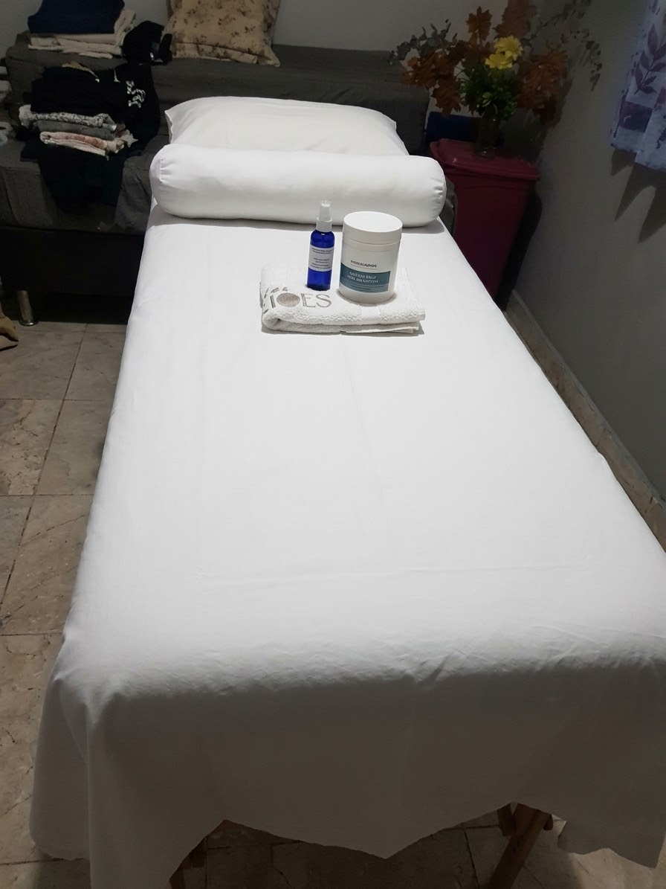

Relaxamento
Uma pausa acolhedora para desacelerar o ritmo e reservar um momento para si.
Um espaço de acolhimento para desacelerar, aliviar as tensões do dia a dia e reconectar você ao seu bem-estar.
Cada atendimento é conversado e pensado com respeito às suas necessidades e ao seu conforto.

Uma conversa antes da sessão ajuda a entender o que você busca e a ajustar cada etapa ao seu conforto.
Uma pausa acolhedora para desacelerar o ritmo e reservar um momento para si.
Cuidado atento às áreas de maior tensão, com pressão e abordagem ajustadas ao seu conforto.
Seu conforto e suas preferências fazem parte da conversa e do cuidado em cada sessão.
Conversamos sobre o que você procura e suas preferências.
A sessão é adaptada para que você se sinta confortável em cada etapa.
Fale diretamente pelo WhatsApp para tirar dúvidas e combinar um horário.
Um ambiente preparado para você fazer uma pausa e se sentir acolhida.
A massoterapia é um convite para voltar a atenção para si. Cada atendimento é conduzido com respeito, escuta e cuidado, em um ambiente preparado para você se sentir à vontade.
Antes de começar, conversamos sobre o que você busca e ajustamos a sessão juntos.
Entre em contato para tirar dúvidas, conhecer os atendimentos e encontrar um horário.
Conte o que você procura e tire suas dúvidas diretamente.
Consulte a disponibilidade e escolha o melhor momento para você.
Chegue com calma e aproveite uma pausa de cuidado.
Fale com a Do Carmo HumanYs e agende pelo WhatsApp.
Se preferir, fale conosco diretamente pelo WhatsApp.
É só chamar pelo WhatsApp. Você pode tirar dúvidas e combinar um horário por lá.
Sim. Conversamos antes da sessão e ajustamos o atendimento às suas preferências e ao seu conforto.
Quadra 3, Conjunto F, Lote 4 B — Residencial São Francisco, Setor Habitacional Águas Quentes. Ver no mapa ↗